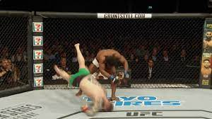

Donner un coup alors que l'arbitre a signifié un arrêt
Les coups de pieds ou de genou à un adversaire au sol
Les projections au sol faisant tomber l'adversaire sur la tête
Mettre les doigts dans les yeux ou chercher à crever l'oeil d'un adversaire